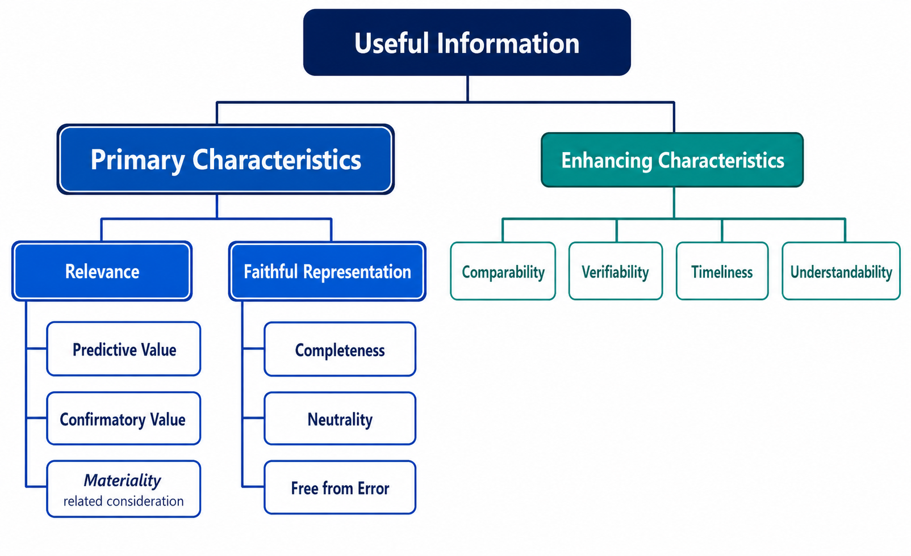
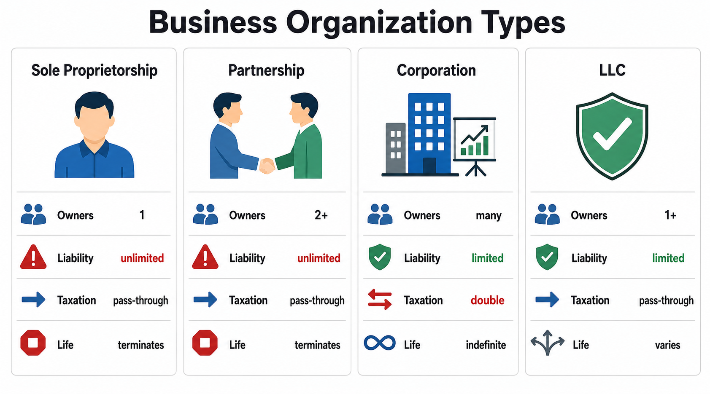
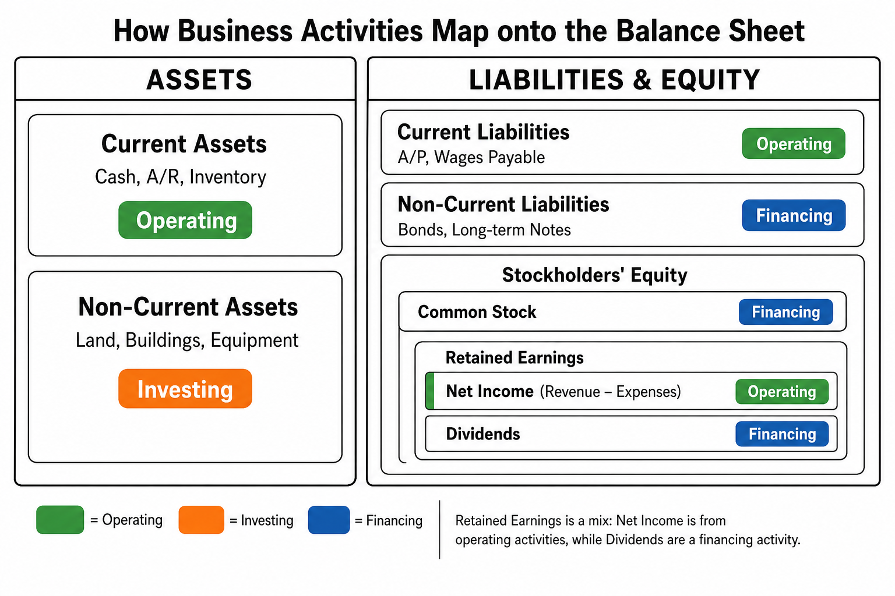
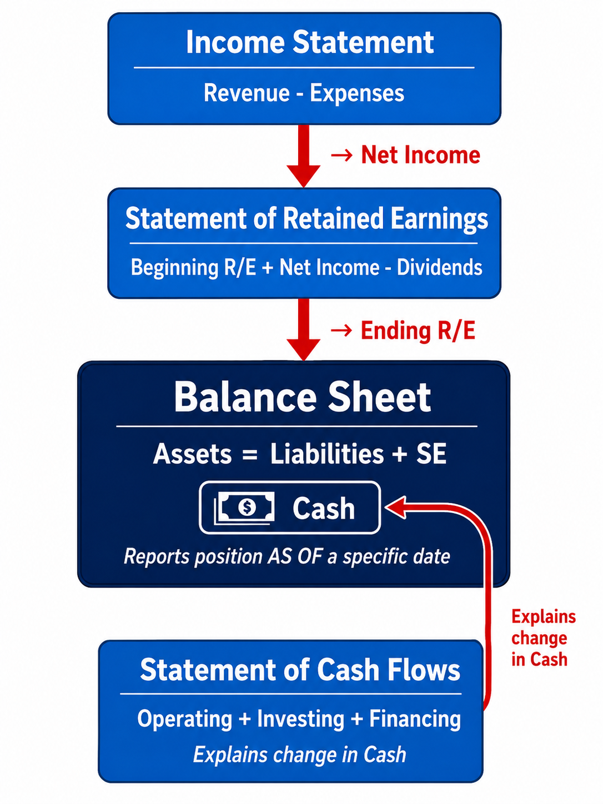

The Foundation of Financial Accounting
Each link opens the lecture video at that topic. Timestamps are approximate — a topic may begin a few seconds before or after the mark, so step back a little if you land mid-sentence.
The core objective of financial accounting is straightforward: to provide useful information to external users to aid in their decision-making. While there are various types of external users, the two most important groups are creditors and investors. Both provide capital to the company, but their goals and expectations differ significantly.
Creditors lend money to a company with the expectation of earning interest and eventually collecting the principal at maturity. Before extending credit, they must evaluate the firm's financial health to ensure the company can repay its obligations.
Investors, on the other hand, provide capital in exchange for ownership in the company. Unlike creditors, investors do not receive guaranteed interest payments. Instead, they benefit in two ways: (1) as the company grows, the stock price rises, allowing them to sell shares at a profit; and (2) if the company earns sufficient profit, it may distribute dividends to its shareholders.
Both creditors and investors are putting their money at risk. Creditors ask: "Can this company pay me back with interest?" Investors ask: "Will this company grow and avoid bankruptcy?" Both questions can only be answered by analyzing the company's financial statements—which is exactly what financial accounting provides.
Since the objective of financial accounting is to provide "useful information," the Financial Accounting Standards Board (FASB) has established specific criteria that define what makes information useful. These criteria are divided into two levels: primary qualitative characteristics and enhancing qualitative characteristics.
For accounting information to be considered useful, it must possess two fundamental qualities: relevance and faithful representation.

Relevance means the information must relate to the company's economic events and be capable of making a difference in a user's decision. It has two components. Predictive value allows users to form expectations about the future based on current data. Confirmatory value enables users to verify or correct their prior predictions. Additionally, materiality is a related consideration—information is material if omitting or misstating it could influence users' decisions. A $10 error in a billion-dollar company's records, for instance, would not alter an investor's decision and is therefore immaterial.
Faithful representation requires that financial information accurately depicts the economic events it purports to represent. Information must be complete (nothing important is omitted), neutral (not biased or manipulated to favor one group over another), and free from error (reasonably accurate in its depiction of financial reality).
Beyond the primary characteristics, four enhancing qualities further improve the usefulness of accounting information:
Comparability allows users to compare the financial statements of different companies. This is precisely why standardized rules such as GAAP exist. Closely related is consistency, which requires a single company to apply the same accounting methods from period to period, enabling meaningful comparisons over time.
Verifiability means that independent parties examining the same data should reach the same conclusions. Timeliness requires that information be delivered quickly enough to be relevant—financial data from a decade ago has little value for current decisions. Finally, understandability means that reports should be presented clearly enough for anyone with a reasonable knowledge of business to comprehend.
Two major professional certifications exist in accounting. Certified Public Accountants (CPAs) serve the general public, performing audits, tax preparation, and consulting for various clients. Certified Management Accountants (CMAs) specialize in financial management and typically work within a single company, supporting internal decision-making.
In the United States, accounting standards are established through a system of oversight involving both government and private-sector organizations:
The SEC is the government agency that oversees the U.S. financial markets. Although the SEC holds the legal authority to set accounting standards, it has largely delegated this responsibility to the FASB, a private-sector organization. The FASB is the body that actually creates and updates GAAP—the set of rules and guidelines that all U.S. companies must follow when preparing financial statements.
On the international level, the IASB publishes the International Financial Reporting Standards (IFRS), which are used by many countries outside the United States. While this course focuses primarily on U.S. GAAP, awareness of IFRS is increasingly important in a globalized business environment.
In the early 2000s, massive accounting scandals—most notably involving Enron and WorldCom—shook public confidence in the financial markets. In response, the U.S. Congress passed the Sarbanes-Oxley Act (SOX) in 2002. SOX led to the creation of the PCAOB (Public Company Accounting Oversight Board), an independent body that monitors the auditors of public companies. The Act also significantly enhanced penalties for white-collar crimes and strengthened the independence of external auditors by prohibiting them from providing certain consulting services to the same clients they audit.
Arthur Andersen, one of the largest accounting firms in the world at the time, served as Enron's external auditor. However, Arthur Andersen was simultaneously providing lucrative consulting services to Enron—earning millions of dollars in consulting fees on top of its audit fees.
This created a severe conflict of interest. As auditors, Arthur Andersen was supposed to independently verify the accuracy and fairness of Enron's financial statements. But as consultants, the firm had a powerful financial incentive to keep Enron happy as a client—undermining the very auditor independence that the public relies on. When Enron's fraudulent accounting was finally exposed, Arthur Andersen was found to have shredded audit documents and was convicted of obstruction of justice. The firm collapsed, and roughly 85,000 employees lost their jobs.
This case is the primary reason SOX now prohibits accounting firms from providing both audit and consulting services to the same client—a rule designed to protect auditor independence and restore public trust.
Financial reporting rests on four fundamental assumptions that serve as the bedrock of accounting practice:
| Assumption | Description | Example |
|---|---|---|
| Monetary Unit | Only transactions that can be expressed in monetary terms are recorded. | A CEO's leadership skills, however valuable, cannot be recorded as an asset because they cannot be objectively measured in dollars. |
| Economic Entity | A business is a separate entity, distinct from its owners and other businesses. | An owner's personal car payment must not be recorded in the company's accounting records. |
| Periodicity | The economic life of a business can be divided into artificial time periods (months, quarters, years). | Companies report financial results on an annual and quarterly basis. |
| Going Concern | The business is assumed to continue operating for the foreseeable future. | Assets are recorded at cost rather than liquidation value because the company is not expected to go bankrupt. |
Businesses can be organized in several different legal structures. The four primary forms are sole proprietorships, partnerships, corporations, and limited liability companies (LLCs). Each form has distinct characteristics regarding ownership, liability, taxation, and lifespan.
A sole proprietorship has a single owner, known as the proprietor. This is the simplest form of business to establish. However, the owner bears unlimited liability—meaning the owner is personally responsible for all of the business's debts. If the business goes bankrupt, the owner's personal assets can be seized to satisfy outstanding obligations. For tax purposes, the business is not a separate taxable entity; all income passes through to the owner's personal tax return. The life of the business terminates at the owner's choice or upon death.
A partnership is a business owned by two or more individuals (or entities) that is not organized as a corporation. Like sole proprietorships, partners face unlimited liability—each partner is personally liable for the partnership's debts. Taxation also passes through to the individual partners based on their ownership share. The partnership terminates at any partner's choice or death.
A corporation is a business organized under state law as a separate legal entity. It can have thousands of owners, called stockholders (or shareholders). The most significant advantage of a corporation is limited liability: stockholders are not personally liable for the corporation's debts. Their risk is limited to the amount they invested.
Suppose you invest $1,000 in a corporation by purchasing its stock. If the company later goes bankrupt with millions of dollars in debt, you simply lose your $1,000 investment. The company's creditors cannot come after your personal bank accounts, home, or car. That is the power of limited liability.
Although stockholders are the owners of a corporation, they do not directly manage the company. Instead, stockholders exercise their voting rights to elect a Board of Directors, which oversees the company's strategic direction. The Board, in turn, appoints the top executives—such as the CEO (Chief Executive Officer) and CFO (Chief Financial Officer)—who handle day-to-day operations. This separation of ownership and management is a defining feature of the corporate form.
Buying stock makes you an owner, but you don't directly run the company—you vote to elect the Board, who then hires the management team.
However, corporations face a notable disadvantage: double taxation. The corporation itself pays corporate income tax on its earnings. When those earnings are then distributed to stockholders as dividends, the stockholders must pay personal income tax on those dividends. The same income is effectively taxed twice.
Despite this tax disadvantage, the ability to raise massive amounts of capital—by issuing corporate bonds and shares of stock to the public—makes the corporate form the most common structure for large businesses. The life of a corporation is indefinite; it continues regardless of changes in ownership.
An LLC is a hybrid structure that combines the most attractive features of partnerships and corporations. Like a partnership, income passes through directly to the individual members, avoiding double taxation. Like a corporation, members enjoy limited liability. While LLCs can be more complex to establish and may face certain state-specific restrictions, they offer an appealing balance of tax efficiency and liability protection.

The accounting equation is the most fundamental tool in all of accounting. Every transaction a business engages in can be expressed through this equation, which must always remain in balance:
\[ \text{Assets} = \text{Liabilities} + \text{Stockholders' Equity} \]
The left side of the equation represents the company's resources—its assets. The right side represents the claims to those resources: liabilities are claims by creditors, and stockholders' equity represents the owners' residual claim. A helpful way to think about it: the left side shows how the money is used, while the right side shows where the money came from.
An asset is an economic resource that is expected to benefit the business in the future. Common examples include:
Whenever you see the word "receivable" in an account name (e.g., Accounts Receivable, Notes Receivable), it indicates an asset—the company has the right to receive money in the future.
Liabilities are debts or obligations owed to creditors. Many liability accounts contain the word "payable" in their name.
Whenever you see the word "payable" in an account name (e.g., Accounts Payable, Notes Payable, Salaries Payable), it indicates a liability—the company has an obligation to pay in the future.
Stockholders' equity has two primary components:
Contributed Capital represents the funds invested directly by owners when the company issues stock. The primary account is Common Stock.
Earned Capital (Retained Earnings) represents the profits that the company has generated and retained over its lifetime. Retained earnings are affected by three factors:
Dividends are NOT expenses. Dividends are distributions of earnings to owners. They do not appear on the Income Statement. Instead, they appear on the Statement of Retained Earnings. This distinction is critical.
All business activities fall into one of three categories: operating, investing, and financing activities. These categories are directly reflected in the structure of the balance sheet.

Operating activities involve the day-to-day running of the business. These include generating revenue, paying salaries, purchasing inventory, and collecting receivables. On the balance sheet, operating activities are reflected primarily in current assets and current liabilities.
Investing activities involve acquiring or disposing of long-term assets. When a company buys land, buildings, or equipment to support its operations, these are classified as investing activities and appear as non-current assets.
Financing activities involve raising capital from creditors and investors. Issuing long-term bonds creates non-current liabilities; issuing stock increases stockholders' equity. Both are financing activities. Paying dividends to stockholders is also a financing activity because it represents a return of capital to owners.
Notice that Stockholders' Equity is not purely a financing item. Common Stock is financing—it represents capital raised from investors. But Retained Earnings is a mix: the Net Income component (revenues minus expenses) comes from operating activities, while dividends are a financing activity. This is exactly why the Statement of Cash Flows separates operating, investing, and financing cash flows—even though these activities may all end up affecting the same balance sheet line items.
Financial accounting communicates a company's financial information through four primary financial statements. These statements are interconnected—the output of one flows directly into the next.

The Income Statement reports the operating results of a company for a specific period of time (e.g., "for the month ended January 31, 2027"). It lists the company's revenues and expenses, and the difference between them is Net Income (if revenues exceed expenses) or Net Loss (if expenses exceed revenues). Preparation of financial statements always begins with the Income Statement.
The Statement of Retained Earnings serves as the bridge between the Income Statement and the Balance Sheet. It shows how retained earnings changed during the period:
\[ \text{Beginning R/E} + \text{Net Income} - \text{Dividends} = \text{Ending R/E} \]
Notice how Year 1's ending balance becomes Year 2's beginning balance. Retained Earnings is the cumulative total of all net income earned minus all dividends paid over the company's entire life.
The Balance Sheet reports the financial position of a business as of a specific date (e.g., "as of January 31, 2027"). Unlike the other three statements, which cover a period of time, the Balance Sheet captures a single point in time. It presents the accounting equation: Assets = Liabilities + Stockholders' Equity.
The Income Statement, Statement of Retained Earnings, and Statement of Cash Flows all report activities "for" a period (e.g., "for the month ended..."). The Balance Sheet reports the financial position "as of" a specific date. This distinction matters—the cash balance on a Balance Sheet is the exact amount on hand at that one moment, not the total cash earned during the period.
The Statement of Cash Flows reports cash inflows and outflows, organized into three categories that mirror the three types of business activities: operating, investing, and financing. The net result explains the change in cash from the beginning to the end of the period, tying directly to the cash balance shown on the Balance Sheet. Detailed preparation of this statement is covered in later chapters.
A transaction is any event that affects the financial position of the business and can be reliably measured. Purchasing equipment for cash is a transaction; merely hiring a new employee is not (until the employee performs work and earns wages). Every transaction must be analyzed in terms of its effect on the accounting equation, and the equation must remain in balance after every transaction.
You must always analyze transactions from the perspective of the company—not from your personal perspective. When Sheena Bright contributes cash to Smart Touch Learning, students sometimes think "she lost money." But from the company's perspective, it received cash and issued stock. Every transaction in this course is analyzed from the company's viewpoint.
"On account" means a transaction is completed on credit. If a company buys supplies "on account," it creates an Accounts Payable (liability). If a company performs services "on account," it creates an Accounts Receivable (asset).
Let's walk through a series of nine transactions for Smart Touch Learning, a company that provides educational training services. The company begins operations in January 2027. Each transaction is analyzed for its effect on the accounting equation.
Sheena Bright contributes $30,000 cash to Smart Touch Learning in exchange for common stock.
Analysis: The company receives cash (asset ↑ $30,000) and issues common stock (equity ↑ $30,000). Both sides of the equation increase equally.
Smart Touch Learning purchases land for $20,000 cash.
Analysis: Cash decreases by $20,000 and Land increases by $20,000. This is a shift within assets—total assets remain unchanged, and the equation stays in balance.
The company buys $500 of office supplies on account, agreeing to pay within 30 days.
Analysis: Office Supplies (asset) increases by $500, and Accounts Payable (liability) increases by $500. The equation remains in balance.
Smart Touch Learning earns $5,500 by providing training services, collecting cash immediately.
Analysis: Cash (asset) increases by $5,500. Service Revenue increases Retained Earnings (equity ↑ $5,500). Both sides increase equally.
The company performs services worth $3,000 for clients who promise to pay within one month.
Analysis: Accounts Receivable (asset) increases by $3,000. Service Revenue increases Retained Earnings (equity ↑ $3,000). Revenue is recognized when the service is performed, regardless of when cash is collected.
Smart Touch Learning pays $3,200 in cash: $2,000 for rent and $1,200 for salaries.
Analysis: Cash (asset) decreases by $3,200. Rent Expense and Salaries Expense reduce Retained Earnings (equity ↓ $3,200). Both sides decrease equally.
The company pays $300 toward the office supplies purchased in Transaction 3.
Analysis: Cash (asset) decreases by $300, and Accounts Payable (liability) decreases by $300. Both sides decrease equally.
Smart Touch Learning collects $2,000 from the client in Transaction 5.
Analysis: Cash (asset) increases by $2,000, and Accounts Receivable (asset) decreases by $2,000. This is a shift within assets—total assets are unchanged, and the equation remains in balance. Note: this is not new revenue. The revenue was already recorded in Transaction 5 when the service was performed.
Collecting cash from a customer who already owes you is NOT new revenue. The revenue was already recorded when the service was performed (Transaction 5). This is one of the most common mistakes students make—confusing cash collection with revenue recognition. Cash and revenue are two different things. Revenue is recorded when the service is performed, regardless of when cash is received.
The company distributes a $5,000 cash dividend to stockholder Sheena Bright.
Analysis: Cash (asset) decreases by $5,000, and Dividends reduce Retained Earnings (equity ↓ $5,000). Remember: dividends are not expenses—they are distributions of earnings to owners.
The following table summarizes the effect of all nine transactions on Smart Touch Learning's accounting equation. Notice that after every transaction, total assets equal total liabilities plus stockholders' equity.
| Transaction | Cash | A/R | Supplies | Land | = | A/P | + | Common Stock | R/E |
|---|---|---|---|---|---|---|---|---|---|
| 1 Owner contribution | +30,000 | = | + | +30,000 | |||||
| 2 Purchase land | −20,000 | +20,000 | = | + | |||||
| 3 Supplies on acct | +500 | = | +500 | + | |||||
| 4 Revenue (cash) | +5,500 | = | + | +5,500 | |||||
| 5 Revenue (on acct) | +3,000 | = | + | +3,000 | |||||
| 6 Pay expenses | −3,200 | = | + | −3,200 | |||||
| 7 Pay on account | −300 | = | −300 | + | |||||
| 8 Collect on acct | +2,000 | −2,000 | = | + | |||||
| 9 Pay dividend | −5,000 | = | + | −5,000 | |||||
| Totals | $9,000 | $1,000 | $500 | $20,000 | = | $200 | + | $30,000 | $300 |
Total Assets: $9,000 + $1,000 + $500 + $20,000 = $30,500 | Total L + SE: $200 + $30,000 + $300 = $30,500 ✔
Using the transaction data from Smart Touch Learning, we can now prepare all four financial statements. Remember: the statements are prepared in a specific order because each one feeds into the next.
At the conclusion of each chapter, a financial ratio is introduced to connect the accounting concepts learned to real-world financial analysis. For Chapter 1, that ratio is Return on Assets (ROA).
\[ \text{ROA} = \frac{\text{Net Income}}{\text{Average Total Assets}} \]
ROA measures how profitably a company uses its assets. Because Net Income covers a period of time while Total Assets are reported at a point in time, we use the average of beginning and ending total assets to align the timeframes:
Average Total Assets = (Beginning Total Assets + Ending Total Assets) ÷ 2
Suppose a company reports Net Income of $50,000 for the year ended December 31, 2027. Its Total Assets were $400,000 at the beginning of the year and $600,000 at year-end.
Average Total Assets = ($400,000 + $600,000) ÷ 2 = $500,000
ROA = $50,000 ÷ $500,000 = 10%
This means the company generated 10 cents of profit for every dollar invested in assets. A higher ROA indicates more efficient and profitable use of resources.